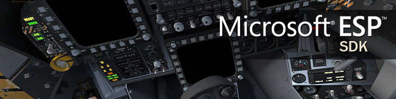
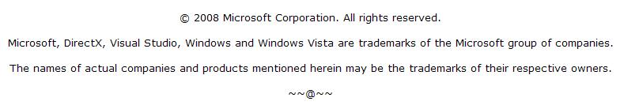

Overview
Microsoft ESP 1.0

Simulation Variables
There are two classes of simulation variables: aircraft and global data. The following tables list all the variables that can appear in XML based gauges, or used from the SimConnect APIs.
See Also
Table of Contents
- Aircraft Data
- Aircraft Engine Data
- Fuel Tank Selection
- Aircraft Fuel Data
- Aircraft Lights Data
- Aircraft Position and Speed Data
- Aircraft Flight Instrumentation Data
- Aircraft Avionics Data
- Aircraft Controls Data
- Aircraft Autopilot Data
- Aircraft Landing Gear Data
- Aircraft Environment Data
- Helicopter Specific Data
- Aircraft Miscellaneous Systems Data
- Miscellaneous Data
- Aircraft String Data
- AI Controlled Aircraft
- Carrier Operations
- Racing
- Environment Data
- Program Data
- Units of Measurement
Aircraft Data
Notes (Gauges)
Aircraft data is referenced by A: in XML gauges. Some parameters take an index to determine which of a multiple of system is being queried. In XML gauges the syntax for adding an index is :N, for example:
FUEL TANK SELECTOR:index
Notes (SimConnect)
Simulation variables are referenced from within SimConnect clients with the SimConnect_AddToDataDefinition call (see the SimConnect document for full details). When the units are listed as a structure or as a string, enter the empty string, or simply NULL, in the units parameter of this function call.
For example:
hr = SimConnect_AddToDataDefinition(hSimConnect, DEFINITION_1, "Kohlsman setting hg", "inHg");
hr = SimConnect_AddToDataDefinition(hSimConnect, DEFINITION_1, "Indicated Altitude", "feet");
hr = SimConnect_AddToDataDefinition(hSimConnect, DEFINITION_1, "Plane Latitude", "degrees");
hr = SimConnect_AddToDataDefinition(hSimConnect, DEFINITION_1, "Plane Longitude", "degrees");
hr = SimConnect_AddToDataDefinition(hSimConnect, DEFINITION_2, "Category", null); \\ string
hr = SimConnect_AddToDataDefinition(hSimConnect, DEFINITION_2, "AI Waypoint List", null); \\ structure
Unless the Units column in the following table identifies the units as a structure or a string, the data will be returned by default in a signed 64 bit floating point value. The SimConnect_AddToDataDefinition has an optional parameter to change this to a signed 32 or 64 bit integer, or a signed 32 bit floating point value.
Notes (Multiplayer)
When the simulation is running in multiplayer mode, only a small number of variables are communicated between aircraft. This is noted in the Multiplayer column (All aircraft or Shared Cockpit).
Aircraft Engine Data
In the multiplayer Shared Cockpit mode the only supported index is 1, which
means that the data is assumed to be identical for all engines. In single player mode engine indexes are from 1 to 4.
Simulation Variable | Description | Units | Settable | Multiplayer |
| NUMBER OF ENGINES | Number of engines (minimum 0, maximum 4) | Number | N | - |
| ENGINE CONTROL SELECT |
Selected engines (combination of bit flags) 1 = Engine 1 2 = Engine 2 4 = Engine 3 8 = Engine 4 | Mask | Y | - |
| THROTTLE LOWER LIMIT | Percent throttle defining lower limit (negative for reverse thrust equipped airplanes) | Percent | N | - |
| ENGINE TYPE |
Engine type: 0 = Piston 1 = Jet 2 = None 3 = Helo(Bell) turbine 4 = Unsupported 5 = Turboprop | Enum | N | - |
| MASTER IGNITION SWITCH | Aircraft master ignition switch (grounds all engines magnetos) | Bool | N | - |
| GENERAL ENG COMBUSTION:index | Combustion flag | Bool | Y | Shared Cockpit (Index of 1 only). |
| GENERAL ENG MASTER ALTERNATOR:index | Alternator (generator) switch | Bool | N | Shared Cockpit (Index of 1 only). |
| GENERAL ENG FUEL PUMP SWITCH:index | Fuel pump switch | Bool | N | Shared Cockpit (Index of 1 only). |
| GENERAL ENG FUEL PUMP ON:index | Fuel pump on/off | Bool | N | - |
| GENERAL ENG RPM:index | Engine rpm | Rpm | N | - |
| GENERAL ENG PCT MAX RPM:index | Percent of max rated rpm | Percent | N | - |
| GENERAL ENG MAX REACHED RPM:index | Maximum attained rpm | Rpm | N | - |
| GENERAL ENG THROTTLE LEVER POSITION:index | Percent of max throttle position | Percent | Y | Shared Cockpit (Index of 1 only). |
| GENERAL ENG MIXTURE LEVER POSITION:index | Percent of max mixture lever position | Percent | Y | Shared Cockpit (Index of 1 only). |
| GENERAL ENG PROPELLER LEVER POSITION:index | Percent of max prop lever position | Percent | Y | Shared Cockpit (Index of 1 only). |
| GENERAL ENG STARTER:index | Engine starter on/off | Bool | N | - |
| GENERAL ENG EXHAUST GAS TEMPERATURE:index | Engine exhaust gas temperature. | Rankine | Y | - |
| GENERAL ENG OIL PRESSURE:index | Engine oil pressure | Psf | Y | - |
| GENERAL ENG OIL LEAKED PERCENT:index | Percent of max oil capacity leaked | Percent | N | - |
| GENERAL ENG COMBUSTION SOUND PERCENT:index | Percent of maximum engine sound | Percent | N | - |
| GENERAL ENG DAMAGE PERCENT:index | Percent of total engine damage | Percent | N | - |
| GENERAL ENG OIL TEMPERATURE:index | Engine oil temperature | Rankine | Y | - |
| GENERAL ENG FAILED:index | Fail flag | Bool | N | - |
| GENERAL ENG GENERATOR SWITCH:index | Alternator (generator) switch | Bool | N | - |
| GENERAL ENG GENERATOR ACTIVE:index | Alternator (generator) on/off | Bool | Y | - |
| GENERAL ENG ANTI ICE POSITION:index | Engine anti-ice switch | Bool | N | - |
| GENERAL ENG FUEL VALVE:index | Fuel valve state | Bool | N | Shared Cockpit (Index of 1 only). |
| GENERAL ENG FUEL PRESSURE:index | Engine fuel pressure | Psi | Y | - |
| GENERAL ENG ELAPSED TIME:index | Total engine elapsed time | Hours | N | - |
| RECIP ENG COWL FLAP POSITION:index | Percent cowl flap opened | Percent | Y | Shared Cockpit (Index of 1 only). |
| RECIP ENG PRIMER:index | Engine primer position | Bool | Y | - |
| RECIP ENG MANIFOLD PRESSURE:index | Engine manifold pressure | Psi | Y | - |
| RECIP ENG ALTERNATE AIR POSITION:index | Alternate air control | Position | Y | - |
| RECIP ENG COOLANT RESERVOIR PERCENT:index | Percent coolant available | Percent | Y | - |
| RECIP ENG LEFT MAGNETO:index | Left magneto state | Bool | Y | Shared Cockpit (Index of 1 only). |
| RECIP ENG RIGHT MAGNETO:index | Right magneto state | Bool | Y | Shared Cockpit (Index of 1 only). |
| RECIP ENG BRAKE POWER:index | Brake power produced by engine | Foot pounds per second | Y | - |
| RECIP ENG STARTER TORQUE:index | Torque produced by engine | Foot pound | Y | - |
| RECIP ENG TURBOCHARGER FAILED:index | Turbo failed state | Bool | Y | - |
| RECIP ENG EMERGENCY BOOST ACTIVE:index | War emergency power active | Bool | Y | - |
| RECIP ENG EMERGENCY BOOST ELAPSED TIME:index | Elapsed time war emergency power active | Hours | Y | - |
| RECIP ENG WASTEGATE POSITION:index | Percent turbo wastegate closed | Percent | Y | - |
| RECIP ENG TURBINE INLET TEMPERATURE:index | Engine turbine inlet temperature | Celsius | Y | - |
| RECIP ENG CYLINDER HEAD TEMPERATURE:index | Engine cylinder head temperature | Celsius | Y | - |
| RECIP ENG RADIATOR TEMPERATURE:index | Engine radiator temperature | Celsius | Y | - |
| RECIP ENG FUEL AVAILABLE:index | True if fuel is available | Bool | Y | - |
| RECIP ENG FUEL FLOW:index | Engine fuel flow | Pounds per hour | Y | - |
| RECIP ENG FUEL TANK SELECTOR:index | Fuel tank selected for engine. See fuel tank list. | Enum | N | - |
| RECIP ENG FUEL TANKS USED:index | Fuel tanks used, one or more of the following bit flags: Center 1 Bit 0 Center 2 Bit 1 Center 3 Bit 2 Left Main Bit 3 Left Aux Bit 4 Left Tip Bit 5 Right Main Bit 6 Right Aux Bit 7 Right Tip Bit 8 External 1 Bit 9 External 2 Bit 10 | Mask | Y | - |
| RECIP ENG FUEL NUMBER TANKS USED:index | Number of tanks currently being used | Number | N | - |
| RECIP CARBURETOR TEMPERATURE:index | Carburetor temperature | Celsius | Y | - |
| RECIP MIXTURE RATIO:index | Fuel / Air mixture ratio | Ratio | Y | - |
| TURB ENG N1:index | Turbine engine N1 | Percent | Y | Shared Cockpit (Index of 1 only). |
| TURB ENG N2:index | Turbine engine N2 | Percent | Y | Shared Cockpit (Index of 1 only). |
| TURB ENG CORRECTED N1:index | Turbine engine corrected N1 | Percent | Y | Shared Cockpit (Index of 1 only). |
| TURB ENG CORRECTED N2:index | Turbine engine corrected N2 | Percent | Y | Shared Cockpit (Index of 1 only). |
| TURB ENG CORRECTED FF:index | Corrected fuel flow | Pounds per hour | Y | - |
| TURB ENG MAX TORQUE PERCENT:index | Percent of max rated torque | Percent | Y | - |
| TURB ENG PRESSURE RATIO:index | Engine pressure ratio | Ratio | Y | - |
| TURB ENG ITT:index | Engine ITT | Rankine | Y | - |
| TURB ENG AFTERBURNER:index | Afterburner state | Bool | N | - |
| TURB ENG JET THRUST:index | Engine jet thrust | Pounds | N | - |
| TURB ENG BLEED AIR:index | Bleed air pressure | Psi | N | - |
| TURB ENG TANK SELECTOR:index | Fuel tank selected for engine. See fuel tank list. | Enum | N | - |
| TURB ENG TANKS USED:index | Fuel tanks used, one or more of the following bit flags: Center 1 Bit 0 Center 2 Bit 1 Center 3 Bit 2 Left Main Bit 3 Left Aux Bit 4 Left Tip Bit 5 Right Main Bit 6 Right Aux Bit 7 Right Tip Bit 8 External 1 Bit 9 External 2 Bit 10 | Mask | N | - |
| TURB ENG NUM TANKS USED:index | Number of tanks currently being used | Number | N | - |
| TURB ENG FUEL FLOW PPH:index | Engine fuel flow | Pounds per hour | N | - |
| TURB ENG FUEL AVAILABLE:index | True if fuel is available | Bool | N | - |
| TURB ENG REVERSE NOZZLE PERCENT:index | Percent thrust reverser nozzles deployed | Percent | N | - |
| TURB ENG VIBRATION:index | Engine vibration value | Number | N | - |
| ENG FAILED:index | Failure flag | Number | N | - |
| ENG RPM ANIMATION PERCENT:index | Percent max rated rpm used for visual animation | Percent | N | - |
| ENG ON FIRE:index | On fire state | Bool | Y | - |
| ENG FUEL FLOW BUG POSITION:index | Fuel flow reference | Pounds per hour | N | - |
| PROP RPM:index | Propeller rpm | Rpm | Y | - |
| PROP MAX RPM PERCENT:index | Percent of max rated rpm | Percent | N | - |
| PROP THRUST:index | Propeller thrust | Pounds | N | - |
| PROP BETA:index | Prop blade pitch angle | Radians | N | - |
| PROP FEATHERING INHIBIT:index | Feathering inhibit flag | Bool | N | - |
| PROP FEATHERED:index | Feathered state | Bool | N | - |
| PROP SYNC DELTA LEVER:index | Corrected prop correction input on slaved engine | Position | N | - |
| PROP AUTO FEATHER ARMED:index | Auto-feather armed state | Bool | N | - |
| PROP FEATHER SWITCH:index | Prop feather switch | Bool | N | - |
| PANEL AUTO FEATHER SWITCH:index | Auto-feather arming switch | Bool | N | - |
| PROP SYNC ACTIVE:index | True if prop sync is active | Bool | N | - |
| PROP DEICE SWITCH:index | True if prop deice switch on | Bool | N | - |
| ENG COMBUSTION | True if the engine is running | Bool | N | - |
| ENG N1 RPM:index | Engine N1 rpm | Rpm (0 to 16384 = 0 to 100%) | N | - |
| ENG N2 RPM:index | Engine N2 rpm | Rpm(0 to 16384 = 0 to 100%) | N | - |
| ENG FUEL FLOW GPH:index | Engine fuel flow | Gallons per hour | N | - |
| ENG FUEL FLOW PPH:index | Engine fuel flow | Pounds per hour | N | - |
| ENG TORQUE:index | Torque | Foot pounds | N | - |
| ENG ANTI ICE:index | Anti-ice switch | Bool | N | - |
| ENG PRESSURE RATIO:index | Engine pressure ratio | Ratio (0-16384) | N | - |
| ENG EXHAUST GAS TEMPERATURE:index | Exhaust gas temperature | Rankine | N | - |
| ENG EXHAUST GAS TEMPERATURE GES:index | Governed engine setting | Percent over 100 | N | - |
| ENG CYLINDER HEAD TEMPERATURE:index | Engine cylinder head temperature | Rankine | N | - |
| ENG OIL TEMPERATURE:index | Engine oil temperature | Rankine | N | - |
| ENG OIL PRESSURE:index | Engine oil pressure | Pounds per square foot | N | - |
| ENG OIL QUANTITY:index | Engine oil quantitiy as a percentage of full capacity | Percent over 100 | N | - |
| ENG HYDRAULIC PRESSURE:index | Engine hydraulic pressure | Pounds per square foot | N | - |
| ENG HYDRAULIC QUANTITY:index | Engine hydraulic fluid quantity, as a percentage of total capacity | Percent over 100 | N | - |
| ENG MANIFOLD PRESSURE:index | Engine manifold pressure. | inHG. | N | - |
| ENG VIBRATION:index | Engine vibration | Number | N | - |
| ENG RPM SCALER:index | Obsolete | Scalar | N | - |
| ENG MAX RPM | Maximum rpm | Rpm | N | - |
| GENERAL ENG STARTER ACTIVE | True if engine starter is active | Bool | N | - |
| GENERAL ENG FUEL USED SINCE START | Fuel used since the engines were last started | Pounds | N | - |
| TURB ENG PRIMARY NOZZLE PERCENT:index | Percent thrust of primary nozzle | Percent over 100 | N | - |
| TURB ENG IGNITION SWITCH | True if the turbine engine ignition switch is on | Bool | N | - |
| TURB ENG MASTER STARTER SWITCH | True if the turbine engine master starter switch is on | Bool | N | - |
| TURB ENG AFTERBURNER STAGE ACTIVE | The stage of the afterburner, or 0 if the afterburner is not active. | Number | N | - |
| TURB ENG AFTERBURNER PCT ACTIVE | The percentage that the afterburner is running at. | Percent_over_100 | N | - |
Fuel Tank Selection
Number | Description |
| 0 | Off |
| 1 | All |
| 2 | Left |
| 3 | Right |
| 4 | Left auxiliary |
| 5 | Right auxiliary |
| 6 | Center |
| 7 | Center2 |
| 8 | Center3 |
| 9 | External1 |
| 10 | External2 |
| 11 | Right tip |
| 12 | Left tip |
| 13 | Crossfeed |
| 14 | Crossfeed left to right |
| 15 | Crossfeed right to left |
| 16 | Both |
| 17 | External |
| 18 | Isolate |
| 19 | Left main |
| 20 | Right main |
Aircraft Fuel Data
Simulation Variable | Description | Units | Settable | Multiplayer |
| FUEL TANK CENTER LEVEL | Percent of maximum capacity | Percent Over 100 | Y | - |
| FUEL TANK CENTER2 LEVEL | Percent of maximum capacity | Percent Over 100 | Y | - |
| FUEL TANK CENTER3 LEVEL | Percent of maximum capacity | Percent Over 100 | Y | - |
| FUEL TANK LEFT MAIN LEVEL | Percent of maximum capacity | Percent Over 100 | Y | - |
| FUEL TANK LEFT AUX LEVEL | Percent of maximum capacity | Percent Over 100 | Y | - |
| FUEL TANK LEFT TIP LEVEL | Percent of maximum capacity | Percent Over 100 | Y | - |
| FUEL TANK RIGHT MAIN LEVEL | Percent of maximum capacity | Percent Over 100 | Y | - |
| FUEL TANK RIGHT AUX LEVEL | Percent of maximum capacity | Percent Over 100 | Y | - |
| FUEL TANK RIGHT TIP LEVEL | Percent of maximum capacity | Percent Over 100 | Y | - |
| FUEL TANK EXTERNAL1 LEVEL | Percent of maximum capacity | Percent Over 100 | Y | - |
| FUEL TANK EXTERNAL2 LEVEL | Percent of maximum capacity | Percent Over 100 | Y | - |
| FUEL TANK CENTER CAPACITY | Maximum capacity in volume | Gallons | N | - |
| FUEL TANK CENTER2 CAPACITY | Maximum capacity in volume | Gallons | N | - |
| FUEL TANK CENTER3 CAPACITY | Maximum capacity in volume | Gallons | N | - |
| FUEL TANK LEFT MAIN CAPACITY | Maximum capacity in volume | Gallons | N | - |
| FUEL TANK LEFT AUX CAPACITY | Maximum capacity in volume | Gallons | N | - |
| FUEL TANK LEFT TIP CAPACITY | Maximum capacity in volume | Gallons | N | - |
| FUEL TANK RIGHT MAIN CAPACITY | Maximum capacity in volume | Gallons | N | - |
| FUEL TANK RIGHT AUX CAPACITY | Maximum capacity in volume | Gallons | N | - |
| FUEL TANK RIGHT TIP CAPACITY | Maximum capacity in volume | Gallons | N | - |
| FUEL TANK EXTERNAL1 CAPACITY | Maximum capacity in volume | Gallons | N | - |
| FUEL TANK EXTERNAL2 CAPACITY | Maximum capacity in volume | Gallons | N | - |
| FUEL LEFT CAPACITY | Maximum capacity in volume | Gallons | N | - |
| FUEL RIGHT CAPACITY | Maximum capacity in volume | Gallons | N | - |
| FUEL TANK CENTER QUANTITY | Current quantity in volume | Gallons | Y | - |
| FUEL TANK CENTER2 QUANTITY | Current quantity in volume | Gallons | Y | - |
| FUEL TANK CENTER3 QUANTITY | Current quantity in volume | Gallons | Y | - |
| FUEL TANK LEFT MAIN QUANTITY | Current quantity in volume | Gallons | Y | - |
| FUEL TANK LEFT AUX QUANTITY | Current quantity in volume | Gallons | Y | - |
| FUEL TANK LEFT TIP QUANTITY | Current quantity in volume | Gallons | Y | - |
| FUEL TANK RIGHT MAIN QUANTITY | Current quantity in volume | Gallons | Y | - |
| FUEL TANK RIGHT AUX QUANTITY | Current quantity in volume | Gallons | Y | - |
| FUEL TANK RIGHT TIP QUANTITY | Current quantity in volume | Gallons | Y | - |
| FUEL TANK EXTERNAL1 QUANTITY | Current quantity in volume | Gallons | Y | - |
| FUEL TANK EXTERNAL2 QUANTITY | Current quantity in volume | Gallons | Y | - |
| FUEL LEFT QUANTITY | Current quantity in volume | Gallons | N | - |
| FUEL RIGHT QUANTITY | Current quantity in volume | Gallons | N | - |
| FUEL TOTAL QUANTITY | Current quantity in volume | Gallons | N | - |
| FUEL WEIGHT PER GALLON | Fuel weight per gallon | Pounds | N | - |
| FUEL TANK SELECTOR:index | Which tank is selected. See fuel tank list. | Enum | N | - |
| FUEL CROSS FEED |
Cross feed valve: 0 = Closed 1 = Open | Enum | N | - |
| FUEL TOTAL CAPACITY | Total capacity of the aircraft | Gallons | N | - |
| FUEL SELECTED QUANTITY PERCENT | Percent or capacity for selected tank | Percent Over 100 | N | - |
| FUEL SELECTED QUANTITY | Quantity of selected tank | Gallons | N | - |
| FUEL TOTAL QUANTITY WEIGHT | Current total fuel weight of the aircraft | Pounds | N | - |
| NUM FUEL SELECTORS | Number of selectors on the aircraft | Number | N | - |
| UNLIMITED FUEL | Unlimited fuel flag | Bool | N | - |
| ESTIMATED FUEL FLOW | Estimated fuel flow at cruise | Pounds per hour | N | - |
Aircraft Lights Data
Simulation Variable | Description | Units | Settable | Multiplayer |
| LIGHT STROBE | Light switch state | Bool | N | All aircraft |
| LIGHT PANEL | Light switch state | Bool | N | All aircraft |
| LIGHT LANDING | Light switch state | Bool | N | All aircraft |
| LIGHT TAXI | Light switch state | Bool | N | All aircraft |
| LIGHT BEACON | Light switch state | Bool | N | All aircraft |
| LIGHT NAV | Light switch state | Bool | N | All aircraft |
| LIGHT LOGO | Light switch state | Bool | N | All aircraft |
| LIGHT WING | Light switch state | Bool | N | All aircraft |
| LIGHT RECOGNITION | Light switch state | Bool | N | All aircraft |
| LIGHT CABIN | Light switch state | Bool | N | All aircraft |
| LIGHT ON STATES | Bit mask: 0x0001: Nav 0x0002: Beacon 0x0004: Landing 0x0008: Taxi 0x0010: Strobe 0x0020: Panel 0x0040: Recognition 0x0080: Wing 0x0100: Logo 0x0200: Cabin | Mask | N | - |
| LIGHT STATES | Same as LIGHT ON STATES | Mask | N | All aircraft |
| LANDING LIGHT PBH | Landing light pitch bank and heading | SIMCONNECT_DATA_XYZ structure | N | - |
| LIGHT TAXI ON | Return true if the light is on. | Bool | N | - |
| LIGHT STROBE ON | Return true if the light is on. | Bool | N | - |
| LIGHT PANEL ON | Return true if the light is on. | Bool | N | - |
| LIGHT RECOGNITION ON | Return true if the light is on. | Bool | N | - |
| LIGHT WING ON | Return true if the light is on. | Bool | N | - |
| LIGHT LOGO ON | Return true if the light is on. | Bool | N | - |
| LIGHT CABIN ON | Return true if the light is on. | Bool | N | - |
| LIGHT HEAD ON | Return true if the light is on. | Bool | N | - |
| LIGHT BRAKE ON | Return true if the light is on. | Bool | N | - |
| LIGHT NAV ON | Return true if the light is on. | Bool | N | - |
| LIGHT BEACON ON | Return true if the light is on. | Bool | N | - |
| LIGHT LANDING ON | Return true if the light is on. | Bool | N | - |
Aircraft Position and Speed Data
Simulation Variable | Description | Units | Settable | Multiplayer |
| GROUND VELOCITY | Speed relative to the earths surface | Knots | N | - |
| TOTAL WORLD VELOCITY | Speed relative to the earths center | Feet per second | N | - |
| VELOCITY BODY Z | True longitudinal speed, relative to aircraft axis | Feet per second | Y | - |
| VELOCITY BODY X | True lateral speed, relative to aircraft axis | Feet per second | Y | - |
| VELOCITY BODY Y | True vertical speed, relative to aircraft axis | Feet per second | Y | - |
| VELOCITY WORLD Z | Speed relative to earth, in North/South direction | Feet per second | Y | - |
| VELOCITY WORLD X | Speed relative to earth, in East/West direction | Feet per second | Y | - |
| VELOCITY WORLD Y | Speed relative to earth, in vertical direction | Feet per second | Y | - |
| ACCELERATION WORLD X | Acceleration relative to earth, in east/west direction | Feet per second squared | Y | - |
| ACCELERATION WORLD Y | Acceleration relative to earch, in vertical direction | Feet per second squared | Y | - |
| ACCELERATION WORLD Z | Acceleration relative to earth, in north/south direction | Feet per second squared | Y | - |
| ACCELERATION BODY X | Acceleration relative to aircraft axix, in east/west direction | Feet per second squared | Y | - |
| ACCELERATION BODY Y | Acceleration relative to aircraft axis, in vertical direction | Feet per second squared | Y | - |
| ACCELERATION BODY Z | Acceleration relative to aircraft axis, in north/south direction | Feet per second squared | Y | - |
| ROTATION VELOCITY BODY X | Rotation relative to aircraft axis | Feet per second | Y | - |
| ROTATION VELOCITY BODY Y | Rotation relative to aircraft axis | Feet per second | Y | - |
| ROTATION VELOCITY BODY Z | Rotation relative to aircraft axis | Feet per second | Y | - |
| RELATIVE WIND VELOCITY BODY X | Lateral speed relative to wind | Feet per second | N | - |
| RELATIVE WIND VELOCITY BODY Y | Vertical speed relative to wind | Feet per second | N | - |
| RELATIVE WIND VELOCITY BODY Z | Longitudinal speed relative to wind | Feet per second | N | - |
| PLANE ALT ABOVE GROUND | Altitude above the surface | Feet | Y | - |
| PLANE LATITUDE | Latitude of aircraft, North is positive, South negative | Radians | Y | - |
| PLANE LONGITUDE | Longitude of aircraft, East is positive, West negative | Radians | Y | - |
| PLANE ALTITUDE | Altitude of aircraft | Feet | Y | - |
| PLANE PITCH DEGREES | Pitch angle, although the name mentions degrees the units used are radians | Radians | Y | - |
| PLANE BANK DEGREES | Bank angle, although the name mentions degrees the units used are radians | Radians | Y | - |
| PLANE HEADING DEGREES TRUE | Heading relative to true north, although the name mentions degrees the units used are radians | Radians | Y | - |
| PLANE HEADING DEGREES MAGNETIC | Heading relative to magnetic north, although the name mentions degrees the units used are radians | Radians | Y | - |
| MAGVAR | Magnetic variation | Degrees | N | - |
| GROUND ALTITUDE | Altitude of surface | Meters | N | - |
| SURFACE TYPE |
Type of surface: 0 = Concrete 1 = Grass 2 = Water 3 = Grass_bumpy 4 = Asphalt 5 = Short_grass 6 = Long_grass 7 = Hard_turf 8 = Snow 9 = Ice 10 = Urban 11 = Forest 12 = Dirt 13 = Coral 14 = Gravel 15 = Oil_treated 16 = Steel_mats 17 = Bituminus 18 = Brick 19 = Macadam 20 = Planks 21 = Sand 22 = Shale 23 = Tarmac 24 = Wright_flyer_track | Enum | N | - |
| SIM ON GROUND | On ground flag | Bool | N | - |
| INCIDENCE ALPHA | Angle of attack | Radians | N | - |
| INCIDENCE BETA | Sideslip angle | Radians | N | - |
| WING FLEX PCT:index | The current wing flex. Different values can be set for each wing (for example, during banking). Set an index of 1 for the left wing, and 2 for the right wing. | Percent over 100 | Y | - |
| STRUCT LATLONALT | Returns the latitude, longitude and altitude of the user aircraft. | SIMCONNECT_DATA_LATLONALTstructure | N | - |
| STRUCT LATLONALTPBH | Returns the pitch, bank and heading of the user aircraft. | SIMCONNECT_DATA_LATLONALTstructure | N | - |
| STRUCT SURFACE RELATIVE VELOCITY | The relative surface velocity. | SIMCONNECT_DATA_XYZ structure, feet per second | N | - |
| STRUCT WORLDVELOCITY | The world velocity. | SIMCONNECT_DATA_XYZ structure, feet per second | N | - |
| STRUCT WORLD ROTATION VELOCITY | The world rotation velocity. | SIMCONNECT_DATA_XYZ structure, radians per second | N | - |
| STRUCT BODY VELOCITY | The object body velocity. | SIMCONNECT_DATA_XYZ structure, feet per second | N | - |
| STRUCT BODY ROTATION VELOCITY | The body rotation velocity. Individual body rotation values are in the Aircraft Position and Speed section. | SIMCONNECT_DATA_XYZ structure, radians per second | N | - |
| STRUCT WORLD ACCELERATION | The world acceleration for each axis. Individual world acceleration values are in the Aircraft Position and Speed section. | SIMCONNECT_DATA_XYZ structure, feet per second squared | N | - |
| STRUCT ENGINE POSITION:index | The engine position relative to the reference datum position for the aircraft. | SIMCONNECT_DATA_XYZ structure, feet. | N | - |
| STRUCT EYEPOINT DYNAMIC ANGLE | The angle of the eyepoint view. Zero, zero, zero is straight ahead. | SIMCONNECT_DATA_XYZ structure, radians | N | - |
| STRUCT EYEPOINT DYNAMIC OFFSET | A variable offset away from the EYEPOINT POSITION | SIMCONNECT_DATA_XYZ structure, feet | N | - |
| EYEPOINT POSITION | The eyepoint position relative to the reference datum position for the aircraft. | SIMCONNECT_DATA_XYZ structure, feet | N | - |
Aircraft Flight Instrumentation Data
Simulation Variable | Description | Units | Settable | Multiplayer |
| AIRSPEED TRUE | True airspeed | Knots | Y | - |
| AIRSPEED INDICATED | Indicated airspeed | Knots | Y | - |
| AIRSPEED TRUE CALIBRATE | Angle of True calibration scale on airspeed indicator | Degrees | Y | Shared Cockpit |
| AIRSPEED BARBER POLE | Redline airspeed (dynamic on some aircraft) | Knots | N | - |
| AIRSPEED MACH | Current mach | Mach | N | - |
| VERTICAL SPEED | Vertical speed indication | Feet per second | Y | - |
| MACH MAX OPERATE | Maximum design mach | Mach | N | - |
| STALL WARNING | Stall warning state | Bool | N | - |
| OVERSPEED WARNING | Overspeed warning state | Bool | N | - |
| BARBER POLE MACH | Mach associated with maximum airspeed | Mach | N | - |
| INDICATED ALTITUDE | Altimeter indication | Feet | Y | - |
| KOHLSMAN SETTING MB | Altimeter setting | Millibars | Y | - |
| KOHLSMAN SETTING HG | Altimeter setting | Inches of Mercury, inHg | N | - |
| ATTITUDE INDICATOR PITCH DEGREES | AI pitch indication | Radians | N | - |
| ATTITUDE INDICATOR BANK DEGREES | AI bank indication | Radians | N | - |
| ATTITUDE BARS POSITION | AI reference pitch reference bars | Percent Over 100 | N | - |
| ATTITUDE CAGE | AI caged state | Bool | N | - |
| WISKEY COMPASS INDICATION DEGREES | Magnetic compass indication | Degrees | Y | - |
| PLANE HEADING DEGREES GYRO | Heading indicator (directional gyro) indication | Radians | Y | - |
| HEADING INDICATOR | Heading indicator (directional gyro) indication | Radians | N | - |
| GYRO DRIFT ERROR | Angular error of heading indicator | Radians | N | - |
| DELTA HEADING RATE | Rate of turn of heading indicator | Radians per second | Y | - |
| TURN COORDINATOR BALL | Turn coordinator ball position | Position 128 (-127 to 127) | N | - |
| ANGLE OF ATTACK INDICATOR | AoA indication | Radians | N | - |
| RADIO HEIGHT | Radar altitude | Feet | N | - |
| PARTIAL PANEL ADF | Gauge fail flag (0 = ok, 1 = fail, 2 = blank) | Enum | Y | - |
| PARTIAL PANEL AIRSPEED | Gauge fail flag (0 = ok, 1 = fail, 2 = blank) | Enum | Y | - |
| PARTIAL PANEL ALTIMETER | Gauge fail flag (0 = ok, 1 = fail, 2 = blank) | Enum | Y | - |
| PARTIAL PANEL ATTITUDE | Gauge fail flag (0 = ok, 1 = fail, 2 = blank) | Enum | Y | - |
| PARTIAL PANEL COMM | Gauge fail flag (0 = ok, 1 = fail, 2 = blank) | Enum | Y | - |
| PARTIAL PANEL COMPASS | Gauge fail flag (0 = ok, 1 = fail, 2 = blank) | Enum | Y | - |
| PARTIAL PANEL ELECTRICAL | Gauge fail flag (0 = ok, 1 = fail, 2 = blank) | Enum | Y | - |
| PARTIAL PANEL AVIONICS | Gauge fail flag (0 = ok, 1 = fail, 2 = blank) | Enum | N | - |
| PARTIAL PANEL ENGINE | Gauge fail flag (0 = ok, 1 = fail, 2 = blank) | Enum | Y | - |
| PARTIAL PANEL FUEL INDICATOR | Gauge fail flag (0 = ok, 1 = fail, 2 = blank) | Enum | N | - |
| PARTIAL PANEL HEADING | Gauge fail flag (0 = ok, 1 = fail, 2 = blank) | Enum | Y | - |
| PARTIAL PANEL VERTICAL VELOCITY | Gauge fail flag (0 = ok, 1 = fail, 2 = blank) | Enum | Y | - |
| PARTIAL PANEL TRANSPONDER | Gauge fail flag (0 = ok, 1 = fail, 2 = blank) | Enum | Y | - |
| PARTIAL PANEL NAV | Gauge fail flag (0 = ok, 1 = fail, 2 = blank) | Enum | Y | - |
| PARTIAL PANEL PITOT | Gauge fail flag (0 = ok, 1 = fail, 2 = blank) | Enum | Y | - |
| PARTIAL PANEL TURN COORDINATOR | Gauge fail flag (0 = ok, 1 = fail, 2 = blank) | Enum | N | - |
| PARTIAL PANEL VACUUM | Gauge fail flag (0 = ok, 1 = fail, 2 = blank) | Enum | Y | - |
| MAX G FORCE | Maximum G force attained | Gforce | N | - |
| MIN G FORCE | Minimum G force attained | Gforce | N | - |
| SUCTION PRESSURE | Vacuum system suction pressure | Inches of Mercury, inHg | Y | - |
Aircraft Avionics Data
Simulation Variable | Description | Units | Settable | Multiplayer |
| AVIONICS MASTER SWITCH | Avionics switch state | Bool | N | All aircraft |
| NAV SOUND:index | Nav audio flag. Index of 1 or 2. | Bool | N | Shared Cockpit |
| DME SOUND | DME audio flag | Bool | N | Shared Cockpit |
| ADF SOUND:index | ADF audio flag. Index of 0 or 1. | Bool | N | Shared Cockpit |
| MARKER SOUND | Marker audio flag | Bool | N | Shared Cockpit |
| COM TRANSMIT:index | Audio panel com transmit state. Index of 1 or 2. | Bool | N | Shared Cockpit |
| COM RECIEVE ALL | Flag if all Coms receiving | Bool | N | Shared Cockpit |
| COM ACTIVE FREQUENCY:index | Com frequency. Index is 1 or 2. | Frequency BCD16 | N | All aircraft |
| COM STANDBY FREQUENCY:index | Com standby frequency. Index is 1 or 2. | Frequency BCD16 | N | All aircraft |
| COM STATUS:index |
Radio status flag : -1 =Invalid 0 = OK 1 = Does not exist 2 = No electricity 3 = Failed | Enum | N | - |
| NAV AVAILABLE:index | Flag if Nav equipped on aircraft | Bool | N | - |
| NAV ACTIVE FREQUENCY:index | Nav active frequency. Index is 1 or 2. | MHz | N | Shared Cockpit |
| NAV STANDBY FREQUENCY:index | Nav standby frequency. Index is 1 or 2. | MHz | N | Shared Cockpit |
| NAV SIGNAL:index | Nav signal strength | Number | N | - |
| NAV HAS NAV:index | Flag if Nav has signal | Bool | N | - |
| NAV HAS LOCALIZER:index | Flag if tuned station is a localizer | Bool | N | - |
| NAV HAS DME:index | Flag if tuned station has a DME | Bool | N | - |
| NAV HAS GLIDE SLOPE:index | Flag if tuned station has a glideslope | Bool | N | - |
| NAV BACK COURSE FLAGS:index | Returns the following bit flags: BIT0: 1=back course available BIT1: 1=localizer tuned in BIT2: 1=on course BIT7: 1=station active | Flags | N | - |
| NAV MAGVAR:index | Magnetic variation of tuned nav station | Degrees | N | - |
| NAV RADIAL:index | Radial that aircraft is on | Degrees | N | - |
| NAV RADIAL ERROR:index | Difference between current radial and OBS tuned radial | Degrees | N | - |
| NAV LOCALIZER:index | Localizer course heading | Degrees | N | - |
| NAV GLIDE SLOPE ERROR:index | Difference between current position and glideslope angle. Note that this provides 32 bit floating point precision, rather than the 8 bit integer precision of NAV GSI. | Degrees | N | - |
| NAV CDI:index | CDI needle deflection (+/- 127) | Number | N | - |
| NAV GSI:index | Glideslope needle deflection (+/- 119). Note that this provides only 8 bit precision, whereas NAV GLIDE SLOPE ERROR provides 32 bit floating point precision. | Number | N | - |
| NAV TOFROM:index |
Nav TO/FROM flag: 0 = Off 1 = TO 2 = FROM | Enum | N | - |
| NAV GS FLAG:index | Glideslope flag | Bool | N | - |
| NAV OBS:index | OBS setting. Index of 1 or 2. | Degrees | N | Shared Cockpit |
| NAV DME:index | DME distance | Nautical miles | N | - |
| NAV DMESPEED:index | DME speed | Knots | N | - |
| ADF ACTIVE FREQUENCY:index | ADF frequency. Index of 1 or 2. | Frequency ADF BCD32 | N | Shared Cockpit |
| ADF STANDBY FREQUENCY:index | ADF standby frequency | Hz | N | - |
| ADF RADIAL:index | Current direction from NDB station | Degrees | N | - |
| ADF SIGNAL:index | Signal strength | Number | N | - |
| TRANSPONDER CODE:index | 4-digit code | BCO16 | N | All aircraft (Index of 1 only). |
| MARKER BEACON STATE | Marker beacon state: 0 = None 1 = Outer 2 = Middle 3 = Inner | Enum | Y | - |
| INNER MARKER | Inner marker state | Bool | Y | - |
| MIDDLE MARKER | Middle marker state | Bool | Y | - |
| OUTER MARKER | Outer marker state | Bool | Y | - |
| NAV RAW GLIDE SLOPE:index | Glide slope angle | Degrees | N | - |
| ADF CARD | ADF compass rose setting | Degrees | N | Shared Cockpit |
| HSI CDI NEEDLE | Needle deflection (+/- 127) | Number | N | - |
| HSI GSI NEEDLE | Needle deflection (+/- 119) | Number | N | - |
| HSI CDI NEEDLE VALID | Signal valid | Bool | N | - |
| HSI GSI NEEDLE VALID | Signal valid | Bool | N | - |
| HSI TF FLAGS | Nav TO/FROM flag: 0 = Off 1 = TO 2 = FROM | Enum | N | - |
| HSI BEARING VALID | This will return true if the HSI BEARING variable contains valid data. | Bool | N | - |
| HSI BEARING | If the GPS DRIVES NAV1 variable is true and the HSI BEARING VALID variable is true, this variable contains the HSI needle bearing. If the GPS DRIVES NAV1 variable is false and the HSI BEARING VALID variable is true, this variable contains the ADF1 frequency. | Degrees | N | - |
| HSI HAS LOCALIZER | Station is a localizer | Bool | N | - |
| HSI SPEED | DME/GPS speed | Knots | N | - |
| HSI DISTANCE | DME/GPS distance | Nautical miles | N | - |
| GPS POSITION LAT | Current GPS latitude | Degrees | N | - |
| GPS POSITION LON | Current GPS longitude | Degrees | N | - |
| GPS POSITION ALT | Current GPS altitude | Meters | N | - |
| GPS MAGVAR | Current GPS magnetic variation | Radians | N | - |
| GPS IS ACTIVE FLIGHT PLAN | Flight plan mode active | Bool | N | - |
| GPS IS ACTIVE WAY POINT | Waypoint mode active | Bool | N | - |
| GPS IS ARRIVED | Is flight plan destination reached | Bool | N | - |
| GPS IS DIRECTTO FLIGHTPLAN | Is Direct To Waypoint mode active | Bool | N | - |
| GPS GROUND SPEED | Current ground speed | Meters per second | N | - |
| GPS GROUND TRUE HEADING | Current true heading | Radians | N | - |
| GPS GROUND MAGNETIC TRACK | Current magnetic ground track | Radians | N | - |
| GPS GROUND TRUE TRACK | Current true ground track | Radians | N | - |
| GPS WP DISTANCE | Distance to waypoint | Meters | N | - |
| GPS WP BEARING | Magnetic bearing to waypoint | Radians | N | - |
| GPS WP TRUE BEARING | True bearing to waypoint | Radians | N | - |
| GPS WP CROSS TRK | Cross track distance | Meters | N | - |
| GPS WP DESIRED TRACK | Desired track to waypoint | Radians | N | - |
| GPS WP TRUE REQ HDG | Required true heading to waypoint | Radians | N | - |
| GPS WP VERTICAL SPEED | Vertical speed to waypoint | Meters per second | N | - |
| GPS WP TRACK ANGLE ERROR | Tracking angle error to waypoint | Radians | N | - |
| GPS ETE | Estimated time enroute to destination | Seconds | N | - |
| GPS ETA | Estimated time of arrival at destination | Seconds | N | - |
| GPS WP NEXT LAT | Latitude of next waypoint | Degrees | N | - |
| GPS WP NEXT LON | Longitude of next waypoint | Degrees | N | - |
| GPS WP NEXT ALT | Altitude of next waypoint | Meters | N | - |
| GPS WP PREV VALID | Is previous waypoint valid (i.e. current waypoint is not the first waypoint) | Bool | N | - |
| GPS WP PREV LAT | Latitude of previous waypoint | Degrees | N | - |
| GPS WP PREV LON | Longitude of previous waypoint | Degrees | N | - |
| GPS WP PREV ALT | Altitude of previous waypoint | Meters | N | - |
| GPS WP ETE | Estimated time enroute to waypoint | Seconds | N | - |
| GPS WP ETA | Estimated time of arrival at waypoint | Seconds | N | - |
| GPS COURSE TO STEER | Suggested heading to steer (for autopilot) | Radians | N | - |
| GPS FLIGHT PLAN WP INDEX | Index of waypoint | Number | N | - |
| GPS FLIGHT PLAN WP COUNT | Number of waypoints | Number | N | - |
| GPS IS ACTIVE WP LOCKED | Is switching to next waypoint locked | Bool | N | - |
| GPS IS APPROACH LOADED | Is approach loaded | Bool | N | - |
| GPS IS APPROACH ACTIVE | Is approach mode active | Bool | N | - |
| GPS APPROACH MODE |
Sub mode within approach mode : 0 = None 1 = Transition 2 = Final 3 = Missed | Enum | N | - |
| GPS APPROACH WP TYPE |
Waypoint type within approach mode : 0 = None 1 = Fix 2 = Procedure turn left 3 = Procedure turn right 4 = Dme arc left 5 = Dme arc right 6 = Holding left 7 = Holding right 8 = Distance 9 = Altitude 10 = Manual sequence 11 = Vector to final | Enum | N | - |
| GPS APPROACH IS WP RUNWAY | Waypoint is the runway | Bool | N | - |
| GPS APPROACH SEGMENT TYPE |
Segment type within approach : 0 = Line 1 = Arc clockwise 2 = Arc counter-clockwise | Enum | N | - |
| GPS APPROACH APPROACH INDEX | Index of approach for given airport | Number | N | - |
| GPS APPROACH APPROACH TYPE |
Approach type : 0 = None 1 = GPS 2 = VOR 3 = NDB 4 = ILS 5 = Localizer 6 = SDF 7 = LDA 8 = VOR/DME 9 = NDB/DME 10 = RNAV 11 = Backcourse | Enum | N | - |
| GPS APPROACH TRANSITION INDEX | Index of approach transition | Number | N | - |
| GPS APPROACH IS FINAL | Is approach transition final approach segment | Bool | N | - |
| GPS APPROACH IS MISSED | Is approach segment missed approach segment | Bool | N | - |
| GPS APPROACH TIMEZONE DEVIATION | Deviation of local time from GMT | Seconds | N | - |
| GPS APPROACH WP INDEX | Index of current waypoint | Number | N | - |
| GPS APPROACH WP COUNT | Number of waypoints | Number | N | - |
| GPS DRIVES NAV1 | GPS is driving Nav 1 indicator | Bool | N | Shared Cockpit |
| COM RECEIVE ALL | Toggles all COM radios to receive on | Bool | N | - |
| COM AVAILABLE | True if either COM1 or COM2 is available | Bool | N | - |
| COM TEST:index | Enter an index of 1 or 2. True if the COM system is working. | Bool | N | - |
| TRANSPONDER AVAILABLE | True if a transponder is available | Bool | N | - |
| ADF AVAILABLE | True if ADF is available | Bool | N | - |
| ADF FREQUENCY:index | Legacy, use ADF ACTIVE FREQUENCY | Frequency BCD16 | N | - |
| ADF EXT FREQUENCY:index | Legacy, use ADF ACTIVE FREQUENCY | Frequency BCD16 | N | - |
| ADF IDENT | ICAO code | String | N | - |
| ADF NAME | Descriptive name | String | N | - |
| NAV IDENT | ICAO code | String | N | - |
| NAV NAME | Descriptive name | String | N | - |
| NAV CODES:index | Returns bit flags with the following meaning: BIT7: 0= VOR 1= Localizer BIT6: 1= glideslope available BIT5: 1= no localizer backcourse BIT4: 1= DME transmitter at glide slope transmitter BIT3: 1= no nav signal available BIT2: 1= voice available BIT1: 1 = TACAN available BIT0: 1= DME available | Flags | N | - |
| NAV GLIDE SLOPE | The glide slope gradient. | Number | N | - |
| NAV RELATIVE BEARING TO STATION:index | Relative bearing to station | Degrees | N | - |
| SELECTED DME | Selected DME | Number | N | Shared Cockpit |
| GPS WP NEXT ID | ID of next GPS waypoint | String | N | - |
| GPS WP PREV ID | ID of previous GPS waypoint | String | N | - |
| GPS TARGET DISTANCE | Distance to target | Meters | N | - |
| GPS TARGET ALTITUDE | Altitude of GPS target | Meters | N | - |
| ADF LATLONALT:index | Returns the latitude, longitude and altitude of the station the radio equipment is currently tuned to, or zeros if the radio is not tuned to any ADF station. Index of 1 or 2 for ADF 1 and ADF 2. | SIMCONNECT_DATA_LATLONALTstructure | N | - |
| NAV VOR LATLONALT:index | Returns the VOR station latitude, longitude and altitude. | SIMCONNECT_DATA_LATLONALTstructure | N | - |
| NAV GS LATLONALT:index | Returns the glide slope. | SIMCONNECT_DATA_LATLONALTstructure | N | - |
| NAV DME LATLONALT:index | Returns the DME station. | SIMCONNECT_DATA_LATLONALTstructure | N | - |
| INNER MARKER LATLONALT | Returns the latitude, longitude and altitude of the inner marker of an approach to a runway, if the aircraft is within the required proximity, otherwise it will return zeros. | SIMCONNECT_DATA_LATLONALTstructure | N | - |
| MIDDLE MARKER LATLONALT | Returns the latitude, longitude and altitude of the middle marker. | SIMCONNECT_DATA_LATLONALTstructure | N | - |
| OUTER MARKER LATLONALT | Returns the latitude, longitude and altitude of the outer marker. | SIMCONNECT_DATA_LATLONALTstructure | N | - |
Aircraft Controls Data
Simulation Variable | Description | Units | Settable | Multiplayer |
| YOKE Y POSITION | Percent control deflection fore/aft (for animation) | Position (-16K to 0) -16K = Yoke fully pushed in | Y | - |
| YOKE X POSITION | Percent control deflection left/right (for animation) | Position (-16K to 0) -16K = | Y | - |
| RUDDER PEDAL POSITION | Percent rudder pedal deflection (for animation) | Position (-16K to 0) -16K = left pedal pushed full in | Y | - |
| RUDDER POSITION | Percent rudder input deflection | Position (-16K to 0) -16K = full left | Y | - |
| ELEVATOR POSITION | Percent elevator input deflection | Position (-16K to 0) -16K = full down | Y | - |
| AILERON POSITION | Percent aileron input left/right | Position (-16K to 0) -16K = full left | Y | - |
| ELEVATOR TRIM POSITION | Elevator trim deflection | Radians | Y | Shared Cockpit |
| ELEVATOR TRIM INDICATOR | Percent elevator trim (for indication) | Position (-16K to 0) -16K = full down | N | - |
| ELEVATOR TRIM PCT | Percent elevator trim | Percent Over 100 | N | - |
| BRAKE LEFT POSITION | Percent left brake | Position (0 to 32K) 0 = off, 32K full | Y | - |
| BRAKE RIGHT POSITION | Percent right brake | Position (0 to 32K) 0 = off, 32K full | Y | - |
| BRAKE INDICATOR | Brake on indication | Position (0 to 16K) 0 = off, 16K full | N | - |
| BRAKE PARKING POSITION | Parking brake on | Position (0 to 32K) 0 = off, 32K full | Y | Shared Cockpit |
| BRAKE PARKING INDICATOR | Parking brake indicator | Bool | N | - |
| SPOILERS ARMED | Auto-spoilers armed | Bool | N | All aircraft |
| SPOILERS HANDLE POSITION | Spoiler handle position | Percent Over 100 or Position (16K = down, 0 = up) | Y | All aircraft |
| SPOILERS LEFT POSITION | Percent left spoiler deflected | Percent Over 100 or Position (0 = retracted, 16K fully extended) | N | - |
| SPOILERS RIGHT POSITION | Percent right spoiler deflected | Percent Over 100 or Position (0 = retracted, 16K fully extended) | N | - |
| FLAPS HANDLE PERCENT | Percent flap handle extended | Percent Over 100 | N | - |
| FLAPS HANDLE INDEX | Index of current flap position | Number | Y | All aircraft |
| FLAPS NUM HANDLE POSITIONS | Number of flap positions | Number | N | - |
| TRAILING EDGE FLAPS LEFT PERCENT | Percent left trailing edge flap extended | Percent Over 100 | Y | - |
| TRAILING EDGE FLAPS RIGHT PERCENT | Percent right trailing edge flap extended | Percent Over 100 | Y | - |
| TRAILING EDGE FLAPS LEFT ANGLE | Angle left trailing edge flap extended. Use TRAILING EDGE FLAPS LEFT PERCENT to set a value. | Radians | N | - |
| TRAILING EDGE FLAPS RIGHT ANGLE | Angle right trailing edge flap extended. Use TRAILING EDGE FLAPS RIGHT PERCENT to set a value. | Radians | N | - |
| LEADING EDGE FLAPS LEFT PERCENT | Percent left leading edge flap extended | Percent Over 100 | Y | - |
| LEADING EDGE FLAPS RIGHT PERCENT | Percent right leading edge flap extended | Percent Over 100 | Y | - |
| LEADING EDGE FLAPS LEFT ANGLE | Angle left leading edge flap extended. Use LEADING EDGE FLAPS LEFT PERCENT to set a value. | Radians | N | - |
| LEADING EDGE FLAPS RIGHT ANGLE | Angle right leading edge flap extended. Use LEADING EDGE FLAPS RIGHT PERCENT to set a value. | Radians | N | - |
| AILERON LEFT DEFLECTION | Angle deflection | Radians | N | - |
| AILERON LEFT DEFLECTION PCT | Percent deflection | Percent Over 100 | N | - |
| AILERON RIGHT DEFLECTION | Angle deflection | Radians | N | - |
| AILERON RIGHT DEFLECTION PCT | Percent deflection | Percent Over 100 | N | - |
| AILERON AVERAGE DEFLECTION | Angle deflection | Radians | N | - |
| AILERON TRIM | Angle deflection | Radians | N | - |
| AILERON TRIM PCT | Percent deflection | Percent Over 100 | Y | Shared Cockpit |
| RUDDER DEFLECTION | Angle deflection | Radians | N | - |
| RUDDER DEFLECTION PCT | Percent deflection | Percent Over 100 | N | - |
| RUDDER TRIM | Angle deflection | Radians | N | - |
| RUDDER TRIM PCT | Percent deflection | Percent Over 100 | Y | Shared Cockpit |
| FLAPS AVAILABLE | True if flaps available | Bool | N | - |
| FLAP DAMAGE BY SPEED | True if flagps are damaged by excessive speed | Bool | N | - |
| FLAP SPEED EXCEEDED | True if safe speed limit for flaps exceeded | Bool | N | - |
| ELEVATOR DEFLECTION | Angle deflection | Radians | N | - |
| ELEVATOR DEFLECTION PCT | Percent deflection | Percent Over 100 | N | - |
| ALTERNATE STATIC SOURCE OPEN | Alternate static air source | Bool | N | All aircraft |
| AILERON TRIM PCT | The trim position of the ailerons. Zero is fully retracted. | Float. Percent over 100 | Y | - |
| RUDDER TRIM PCT | The trim position of the rudder. Zero is no trim. | Float. Percent over 100 | Y | - |
| FOLDING WING HANDLE POSITION | True if the folding wing handle is engaged. | Bool | N | - |
| FUEL DUMP SWITCH | If true the aircraft is dumping fuel at the rate set in the configuration file. | Bool | N | - |
Aircraft Autopilot Data
Simulation Variable | Description | Units | Settable | Multiplayer |
| AUTOPILOT AVAILABLE | Available flag | Bool | N | - |
| AUTOPILOT MASTER | On/off flag | Bool | N | Shared Cockpit |
| AUTOPILOT NAV SELECTED | Index of Nav radio selected | Number | N | - |
| AUTOPILOT WING LEVELER | Wing leveler active | Bool | N | Shared Cockpit |
| AUTOPILOT NAV1 LOCK | Lateral nav mode active | Bool | N | - |
| AUTOPILOT HEADING LOCK | Heading mode active | Bool | N | Shared Cockpit |
| AUTOPILOT HEADING LOCK DIR | Selected heading | Degrees | N | Shared Cockpit |
| AUTOPILOT ALTITUDE LOCK | Altitude hole active | Bool | N | Shared Cockpit |
| AUTOPILOT ALTITUDE LOCK VAR | Selected altitude | Feet | N | Shared Cockpit |
| AUTOPILOT ATTITUDE HOLD | Attitude hold active | Bool | N | Shared Cockpit |
| AUTOPILOT GLIDESLOPE HOLD | GS hold active | Bool | N | Shared Cockpit |
| AUTOPILOT PITCH HOLD REF | Current reference pitch | Radians | N | - |
| AUTOPILOT APPROACH HOLD | Approach mode active | Bool | N | Shared Cockpit |
| AUTOPILOT BACKCOURSE HOLD | Back course mode active | Bool | N | Shared Cockpit |
| AUTOPILOT VERTICAL HOLD VAR | Selected vertical speed | Feet/minute | N | Shared Cockpit |
| AUTOPILOT PITCH HOLD | Set to True if the autopilot pitch hold has is engaged. | Bool | N | - |
| AUTOPILOT FLIGHT DIRECTOR ACTIVE | Flight director active | Bool | N | Shared Cockpit |
| AUTOPILOT FLIGHT DIRECTOR PITCH | Reference pitch angle | Radians | N | - |
| AUTOPILOT FLIGHT DIRECTOR BANK | Reference bank angle | Radians | N | - |
| AUTOPILOT AIRSPEED HOLD | Airspeed hold active | Bool | N | Shared Cockpit |
| AUTOPILOT AIRSPEED HOLD VAR | Selected airspeed | Knots | N | Shared Cockpit |
| AUTOPILOT MACH HOLD | Mach hold active | Bool | N | Shared Cockpit |
| AUTOPILOT MACH HOLD VAR | Selected mach | Number | N | Shared Cockpit |
| AUTOPILOT YAW DAMPER | Yaw damper active | Bool | N | Shared Cockpit |
| AUTOPILOT RPM HOLD VAR | Selected rpm | Number | N | - |
| AUTOPILOT THROTTLE ARM | Autothrottle armed | Bool | N | Shared Cockpit |
| AUTOPILOT TAKEOFF POWER ACTIVE | Takeoff / Go Around power mode active | Bool | N | Shared Cockpit |
| AUTOTHROTTLE ACTIVE | Auto-throttle active | Bool | N | - |
| AUTOPILOT NAV1 LOCK | True if autopilot nav1 lock applied | Bool | N | Shared Cockpit |
| AUTOPILOT VERTICAL HOLD | True if autopilot vertical hold applied | Bool | N | - |
| AUTOPILOT RPM HOLD | True if autopilot rpm hold applied | Bool | N | - |
| AUTOPILOT MAX BANK | True if autopilot max bank applied | Radians | N | - |
| FLY BY WIRE ELAC SWITCH | True if the fly by wire Elevators and Ailerons computer is on. | Bool | N | - |
| FLY BY WIRE FAC SWITCH | True if the fly by wire Flight Augmentation computer is on. | Bool | N | - |
| FLY BY WIRE SEC SWITCH | True if the fly by wire Spoilers and Elevators computer is on. | Bool | N | - |
| FLY BY WIRE ELAC FAILED | True if the Elevators and Ailerons computer has failed. | Bool | N | - |
| FLY BY WIRE FAC FAILED | True if the Flight Augmentation computer has failed. | Bool | N | - |
| FLY BY WIRE SEC FAILED | True if the Spoilers and Elevators computer has failed. | Bool | N | - |
Aircraft Landing Gear Data
Simulation Variable | Description | Units | Settable | Multiplayer |
| IS GEAR RETRACTABLE | True if gear can be retracted | Bool | N | - |
| IS GEAR SKIS | True if landing gear is skis | Bool | N | - |
| IS GEAR FLOATS | True if landing gear is floats | Bool | N | - |
| IS GEAR SKIDS | True if landing gear is skids | Bool | N | - |
| IS GEAR WHEELS | True if landing gear is wheels | Bool | N | - |
| GEAR HANDLE POSITION | True if gear handle is applied | Bool | Y | All aircraft |
| GEAR HYDRAULIC PRESSURE | Gear hydraulic pressure | Pound force per square foot (psf) | N | - |
| TAILWHEEL LOCK ON | True if tailwheel lock applied | Bool | N | - |
| GEAR CENTER POSITION | Percent center gear extended | Percent Over 100 | Y | - |
| GEAR LEFT POSITION | Percent left gear extended | Percent Over 100 | Y | - |
| GEAR RIGHT POSITION | Percent right gear extended | Percent Over 100 | Y | - |
| GEAR TAIL POSITION | Percent tail gear extended | Percent Over 100 | N | - |
| GEAR AUX POSITION | Percent auxiliary gear extended | Percent Over 100 | N | - |
| GEAR POSITION:index | Position of landing gear: 0 = unknown 1 = up 2 = down | Enum | Y | - |
| GEAR ANIMATION POSITION:index | Percent gear animation extended | Number | N | - |
| GEAR TOTAL PCT EXTENDED | Percent total gear extended | Percentage | N | - |
| AUTO BRAKE SWITCH CB | Auto brake switch position | Number | N | - |
| WATER RUDDER HANDLE POSITION | Position of the water rudder handle (0 handle retracted, 100 rudder handle applied) | Percent Over 100 | Y | All aircraft |
| WATER LEFT RUDDER EXTENDED | Percent extended | Percentage | N | - |
| WATER RIGHT RUDDER EXTENDED | Percent extended | Percentage | N | - |
| GEAR CENTER STEER ANGLE | Center wheel angle, negative to the left, positive to the right. | Percent Over 100 | N | - |
| GEAR LEFT STEER ANGLE | Left wheel angle, negative to the left, positive to the right. | Percent Over 100 | N | - |
| GEAR RIGHT STEER ANGLE | Right wheel angle, negative to the left, positive to the right. | Percent Over 100 | N | - |
| GEAR AUX STEER ANGLE | Aux wheel angle, negative to the left, positive to the right. The aux wheel is the fourth set of gear, sometimes used on helicopters. | Percent Over 100 | N | - |
| GEAR STEER ANGLE:index | Alternative method of getting the steer angle. Index is 0 = center 1 = left 2 = right 3 = aux | Percent Over 100 | N | - |
| WATER LEFT RUDDER STEER ANGLE | Water left rudder angle, negative to the left, positive to the right. | Percent Over 100 | N | - |
| WATER RIGHT RUDDER STEER ANGLE | Water right rudder angle, negative to the left, positive to the right. | Percent Over 100 | N | - |
| GEAR CENTER STEER ANGLE PCT | Center steer angle as a percentage | Percent Over 100 | N | - |
| GEAR LEFT STEER ANGLE PCT | Left steer angle as a percentage | Percent Over 100 | N | - |
| GEAR RIGHT STEER ANGLE PCT | Right steer angle as a percentage | Percent Over 100 | N | - |
| GEAR AUX STEER ANGLE PCT | Aux steer angle as a percentage | Percent Over 100 | N | - |
| GEAR STEER ANGLE PCT:index | Alternative method of getting steer angle as a percentage. Index is 0 = center 1 = left 2 = right 3 = aux | Percent Over 100 | N | - |
| WATER LEFT RUDDER STEER ANGLE PCT | Water left rudder angle as a percentage | Percent Over 100 | N | - |
| WATER RIGHT RUDDER STEER ANGLE PCT | Water right rudder as a percentage | Percent Over 100 | N | - |
| WHEEL RPM:index | Wheel rpm. Index is 0 = center 1 = left 2 = right 3 = aux | Rpm | N | - |
| CENTER WHEEL RPM | Center landing gear rpm | Rpm | N | - |
| LEFT WHEEL RPM | Left landing gear rpm | Rpm | N | - |
| RIGHT WHEEL RPM | Right landing gear rpm | Rpm | N | - |
| AUX WHEEL RPM | Rpm of fourth set of gear wheels. | Rpm | N | - |
| WHEEL ROTATION ANGLE:index | Wheel rotation angle. Index is 0 = center 1 = left 2 = right 3 = aux | Radians | N | - |
| CENTER WHEEL ROTATION ANGLE | Center wheel rotation angle | Radians | N | - |
| LEFT WHEEL ROTATION ANGLE | Left wheel rotation angle | Radians | N | - |
| RIGHT WHEEL ROTATION ANGLE | Right wheel rotation angle | Radians | N | - |
| AUX WHEEL ROTATION ANGLE | Aux wheel rotation angle | Radians | N | - |
| GEAR EMERGENCY HANDLE POSITION | True if gear emergency handle applied | Bool | N | - |
| GEAR WARNING | One of: 0: unknown 1: normal 2: amphib | Enum | N | - |
| ANTISKID BRAKES ACTIVE | True if antiskid brakes active | Bool | N | - |
| RETRACT FLOAT SWITCH | True if retract float switch on | Bool | N | - |
| RETRACT LEFT FLOAT EXTENDED | If aircraft has retractable floats. | Percent (0 is fully retracted, 100 is fully extended) | N | - |
| RETRACT RIGHT FLOAT EXTENDED | If aircraft has retractable floats. | Percent (0 is fully retracted, 100 is fully extended) | N | - |
| STEER INPUT CONTROL | Position of steering tiller | Percent over 100 | N | - |
| GEAR DAMAGE BY SPEED | True if gear has been damaged by excessive speed | Bool | N | - |
| GEAR SPEED EXCEEDED | True if safe speed limit for gear exceeded | Bool | N | - |
| NOSEWHEEL LOCK ON | True if the nosewheel lock is engaged. | Bool | N | - |
Aircraft Environment Data
Simulation Variable | Description | Units | Settable | Multiplayer |
| AMBIENT DENSITY | Ambient density | Slugs per cubic feet | N | - |
| AMBIENT TEMPERATURE | Ambient temperature | Celsius | N | - |
| AMBIENT PRESSURE | Ambient pressure | Inches of mercury, inHg | N | - |
| AMBIENT WIND VELOCITY | Wind velocity | Knots | N | - |
| AMBIENT WIND DIRECTION | Wind direction | Degrees | N | - |
| AMBIENT WIND X | Wind component in East/West direction. | Meters per second | N | - |
| AMBIENT WIND Y | Wind component in vertical direction. | Meters per second | N | - |
| AMBIENT WIND Z | Wind component in North/South direction. | Meters per second | N | - |
| STRUCT AMBIENT WIND | X (latitude), Y (vertical) and Z (longitude) components of the wind. | Feet_per_second | N | - |
| AMBIENT PRECIP STATE |
Precip state (bit field) 2 = None 4 = Rain 8 = Snow | Mask | N | - |
| AIRCRAFT WIND X | Wind component in aircraft lateral axis | Knots | N | - |
| AIRCRAFT WIND Y | Wind component in aircraft vertical axis | Knots | N | - |
| AIRCRAFT WIND Z | Wind component in aircraft longitudinal axis | Knots | N | - |
| BAROMETER PRESSURE | Barometric pressure | Millibars | N | - |
| SEA LEVEL PRESSURE | Barometric pressure at sea level | Millibars | N | - |
| TOTAL AIR TEMPERATURE | Total air temperature is the air temperature at the front of the aircraft where the ram pressure from the speed of the aircraft is taken into account. | Celsius | N | - |
| WINDSHIELD RAIN EFFECT AVAILABLE | Is visual effect available on this aircraft | Bool | N | - |
| AMBIENT IN CLOUD | True if the aircraft is in a cloud. | Bool | N | - |
| AMBIENT VISIBILITY | Ambient visibility | Meters | N | - |
| STANDARD ATM TEMPERATURE | Outside temperature on the standard ATM scale | Rankine | N | - |
Helicopter Specific Data
Note: Only variables that specifically mention the Bell helicopter apply to the Bell. Simulation Variable | Description | Units | Settable | Multiplayer |
| ROTOR BRAKE HANDLE POS | Percent actuated | Percent Over 100 | N | - |
| ROTOR BRAKE ACTIVE | Active | Bool | N | - |
| ROTOR CLUTCH SWITCH POS | Switch position | Bool | N | - |
| ROTOR CLUTCH ACTIVE | Active | Bool | N | - |
| ROTOR TEMPERATURE | Main rotor transmission temperature | Rankine | N | - |
| ROTOR CHIP DETECTED | Chip detection | Bool | N | - |
| ROTOR GOV SWITCH POS | Switch position | Bool | N | - |
| ROTOR GOV ACTIVE | Active | Bool | N | - |
| ROTOR LATERAL TRIM PCT | Trim percent | Percent Over 100 | N | - |
| ROTOR RPM PCT | Percent max rated rpm | Percent Over 100 | N | - |
| ENG TURBINE TEMPERATURE | Turbine temperature. Applies only to Bell helicopter. | Celsius scalar 16K (degrees * 16384) | N | - |
| ENG TORQUE PERCENT:index | Torque. Returns main rotor torque for Bell helicopter, or the indexed rotor torque of other helicopters. | Percent scalar 16K (Ft/lbs * 16384) | N | - |
| ENG FUEL PRESSURE | Fuel pressure. Applies only to Bell helicopter. | PSI scalar 16K (Psi * 16384) | N | - |
| ENG ELECTRICAL LOAD | Electrical load. Applies only to Bell helicopter. | Percent scalar 16K (Max load * 16384) | N | - |
| ENG TRANSMISSION PRESSURE | Transmission pressure. Applies only to Bell helicopter. | PSI scalar 16K (Psi * 16384) | N | - |
| ENG TRANSMISSION TEMPERATURE | Transmission temperature. Applies only to Bell helicopter. | Celsius scalar 16K (Degrees * 16384) | N | - |
| ENG ROTOR RPM:index | Rotor rpm. Returns main rotor rpm for Bell helicopter, or the indexed rotor rpm of other helicopters. | Percent scalar 16K (Max rpm * 16384) | N | - |
| COLLECTIVE POSITION | The position of the helicopter's collective. 0 is fully up, 100 fully depressed. | Percent_over_100 | N | - |
Slings and Hoists | ||||
| NUM SLING CABLES | The number of sling cables (not hoists) that are configured for the aircraft. Refer to the document Notes on Aircraft Systems. | Number | N | - |
| PAYLOAD STATION OBJECT:index | Places the named object at the payload station identified by the index (starting from 1). The string is the Container name (refer to the title property of Simulation Object Configuration Files). | String | Y- set only | - |
| PAYLOAD STATION NUM SIMOBJECTS:index | The number of objects at the payload station (indexed from 1). | Number | N | - |
| SLING OBJECT ATTACHED:index | If units are set as boolean, returns True if a sling object is attached. If units are set as a string, returns the container title of the object. There can be multiple sling positions, indexed from 1. The sling positions are set in the Aircraft Configuration File. | Bool/String | N | - |
| SLING CABLE BROKEN:index | True if the cable is broken. | Bool | N | - |
| SLING CABLE EXTENDED LENGTH:index | The length of the cable extending from the aircraft. | Feet | Y | - |
| SLING ACTIVE PAYLOAD STATION:index | The payload station (identified by the parameter) where objects will be placed from the sling (identified by the index). | Number | Y | - |
| SLING HOIST PERCENT DEPLOYED:index | The percentage of the full length of the sling cable deployed. | Percent_over_100 | N | - |
| SLING HOOK IN PICKUP MODE:index | A Boolean for whether or not the hook is in pickup mode, so capable of picking up another object. | Bool | N | - |
| IS ATTACHED TO SLING | Set to true if this object is attached to a sling. | Bool | N | - |
Aircraft Miscellaneous Systems Data
Simulation Variable | Description | Units | Settable | Multiplayer |
| SMOKE ENABLE | Set to True to activate the smoke system, if one is available (for example, on the Extra). | Bool | Y | All aircraft |
| SMOKESYSTEM AVAILABLE | Smoke system available | Bool | N | - |
| PITOT HEAT | Pitot heat active | Bool | N | All aircraft |
| FOLDING WING LEFT PERCENT | Left folding wing position, 100 is fully folded | Percent Over 100 | Y | - |
| FOLDING WING RIGHT PERCENT | Right folding wing position, 100 is fully folded | Percent Over 100 | Y | - |
| CANOPY OPEN | Percent primary door/exit open | Percent Over 100 | Y | - |
| TAILHOOK POSITION | Percent tail hook extended | Percent Over 100 | Y | - |
| EXIT OPEN:index | Percent door/exit open | Percent Over 100 | Y | - |
| STALL HORN AVAILABLE | True if stall alarm available | Bool | N | - |
| ENGINE MIXURE AVAILABLE | True if engine mixture is available for prop engines. Obsolete value as mixture is always available. Spelling error in variable name. | Bool | N | - |
| CARB HEAT AVAILABLE | True if carb heat available | Bool | N | - |
| SPOILER AVAILABLE | True if spoiler system available | Bool | N | - |
| IS TAIL DRAGGER | True if the aircraft is a taildragger | Bool | N | - |
| STROBES AVAILABLE | True if strobe lights are available | Bool | N | - |
| TOE BRAKES AVAILABLE | True if toe brakes are available | Bool | N | - |
| PUSHBACK STATE | Type of pushback : 0 = Straight 1 = Left 2 = Right | Enum | Y | - |
| ELECTRICAL MASTER BATTERY | Battery switch position | Bool | Y | All aircraft |
| ELECTRICAL TOTAL LOAD AMPS | Total load amps | Amperes | Y | - |
| ELECTRICAL BATTERY LOAD | Battery load | Amperes | Y | - |
| ELECTRICAL BATTERY VOLTAGE | Battery voltage | Volts | Y | - |
| ELECTRICAL MAIN BUS VOLTAGE | Main bus voltage | Volts | Y | - |
| ELECTRICAL MAIN BUS AMPS | Main bus current | Amperes | Y | - |
| ELECTRICAL AVIONICS BUS VOLTAGE | Avionics bus voltage | Volts | Y | - |
| ELECTRICAL AVIONICS BUS AMPS | Avionics bus current | Amperes | Y | - |
| ELECTRICAL HOT BATTERY BUS VOLTAGE | Voltage available when battery switch is turned off | Volts | Y | - |
| ELECTRICAL HOT BATTERY BUS AMPS | Current available when battery switch is turned off | Amperes | Y | - |
| ELECTRICAL BATTERY BUS VOLTAGE | Battery bus voltage | Volts | Y | - |
| ELECTRICAL BATTERY BUS AMPS | Battery bus current | Amperes | Y | - |
| ELECTRICAL GENALT BUS VOLTAGE:index | Genalt bus voltage (takes engine index) | Volts | Y | - |
| ELECTRICAL GENALT BUS AMPS:index | Genalt bus current (takes engine index) | Amperes | Y | - |
| CIRCUIT GENERAL PANEL ON | Is electrical power available to this circuit | Bool | N | - |
| CIRCUIT FLAP MOTOR ON | Is electrical power available to this circuit | Bool | N | - |
| CIRCUIT GEAR MOTOR ON | Is electrical power available to this circuit | Bool | N | - |
| CIRCUIT AUTOPILOT ON | Is electrical power available to this circuit | Bool | N | - |
| CIRCUIT AVIONICS ON | Is electrical power available to this circuit | Bool | N | - |
| CIRCUIT PITOT HEAT ON | Is electrical power available to this circuit | Bool | N | - |
| CIRCUIT PROP SYNC ON | Is electrical power available to this circuit | Bool | N | - |
| CIRCUIT AUTO FEATHER ON | Is electrical power available to this circuit | Bool | N | - |
| CIRCUIT AUTO BRAKES ON | Is electrical power available to this circuit | Bool | N | - |
| CIRCUIT STANDY VACUUM ON | Is electrical power available to this circuit | Bool | N | Shared Cockpit |
| CIRCUIT MARKER BEACON ON | Is electrical power available to this circuit | Bool | N | - |
| CIRCUIT GEAR WARNING ON | Is electrical power available to this circuit | Bool | N | - |
| CIRCUIT HYDRAULIC PUMP ON | Is electrical power available to this circuit | Bool | N | - |
| HYDRAULIC PRESSURE:index | Hydraulic system pressure. Indexes start at 1. | Pound force per square foot | N | - |
| HYDRAULIC RESERVOIR PERCENT:index | Hydraulic pressure changes will follow changes to this variable. Indexes start at 1. | Percent Over 100 | Y | - |
| HYDRAULIC SYSTEM INTEGRITY | Percent system functional | Percent Over 100 | N | - |
| STRUCTURAL DEICE SWITCH | True if the aircraft structure deice switch is on | Bool | N | - |
| APPLY HEAT TO SYSTEMS | Used when too close to a fire. | Bool | Y | - |
| DROPPABLE OBJECTS TYPE:index | The type of droppable object at the station number identified by the index. | String | Y | - |
| DROPPABLE OBJECTS COUNT:index | The number of droppable objects at the station number identified by the index. | Number | N | - |
Aircraft Miscellaneous Data
Simulation Variable | Description | Units | Settable | Multiplayer |
| TOTAL WEIGHT | Total weight of the aircraft | Pounds | N | - |
| MAX GROSS WEIGHT | Maximum gross weight of the aircaft | Pounds | N | - |
| EMPTY WEIGHT | Empty weight of the aircraft | Pounds | N | - |
| IS USER SIM | Is this the user loaded aircraft | Bool | N | - |
| SIM DISABLED | Is sim disabled | Bool | Y | - |
| G FORCE | Current g force | GForce | Y | All aircraft |
| ATC HEAVY | Is this aircraft recognized by ATC as heavy | Bool | Y | - |
| AUTO COORDINATION | Is auto-coordination active | Bool | Y | - |
| REALISM | General realism percent | Number | Y | - |
| TRUE AIRSPEED SELECTED | True if True Airspeed has been selected | Bool | Y | - |
| DESIGN SPEED VS0 | Design speed at VS0 | Feet per second | N | - |
| DESIGN SPEED VS1 | Design speed at VS1 | Feet per second | N | - |
| DESIGN SPEED VC | Design speed at VC | Feet per second | N | - |
| MIN DRAG VELOCITY | Minimum drag velocity | Feet per second | N | - |
| ESTIMATED CRUISE SPEED | Estimated cruise speed | Feet per second | N | - |
| CG PERCENT | Longitudinal CG position as a percent of reference chord | Percent over 100 | N | - |
| CG PERCENT LATERAL | Lateral CG position as a percent of reference chord | Percent over 100 | N | - |
| IS SLEW ACTIVE | True if slew is active | Bool | Y | Shared Cockpit |
| IS SLEW ALLOWED | True if slew is enabled | Bool | Y | Shared Cockpit |
| ATC SUGGESTED MIN RWY TAKEOFF | Suggested minimum runway length for takeoff. Used by ATC | Feet | N | - |
| ATC SUGGESTED MIN RWY LANDING | Suggested minimum runway length for landing. Used by ATC | Feet | N | - |
| PAYLOAD STATION WEIGHT:index | Individual payload station weight | Pounds | Y | - |
| PAYLOAD STATION COUNT | Number of payload stations | Number | N | - |
| USER INPUT ENABLED | Is input allowed from the user | Bool | Y | - |
| TYPICAL DESCENT RATE | Normal descent rate | Feet per minute | N | - |
| VISUAL MODEL RADIUS | Model radius | Meters | N | - |
| CATEGORY | One of the following: "Airplane", "Helicopter", "Boat", "GroundVehicle", "ControlTower", "SimpleObject", "Viewer" | String | N | - |
| SIGMA SQRT | Sigma sqrt | Number | N | - |
| DYNAMIC PRESSURE | Dynamic pressure | Pounds per square foot | N | - |
| TOTAL VELOCITY | Velocity regardless of direction. For example, if a helicopter is ascending vertically at 100 fps, getting this variable will return 100. | Feet per second | N | - |
| AIRSPEED SELECT INDICATED OR TRUE | The airspeed, whether true or indicated airspeed has been selected. | Knots | N | - |
| VARIOMETER RATE | Variometer rate | Feet per second | N | - |
| VARIOMETER SWITCH | True if the variometer switch is on | Bool | N | - |
| PRESSURE ALTITUDE | Altitude reading | Meters | N | - |
| MAGNETIC COMPASS | Compass reading | Degrees | N | - |
| TURN INDICATOR RATE | Turn indicator reading | Radians per second | N | - |
| TURN INDICATOR SWITCH | True if turn indicator switch is on | Bool | N | - |
| YOKE Y INDICATOR | Yoke position in vertical direction | Position | N | - |
| YOKE X INDICATOR | Yoke position in horizontal direction | Position | N | - |
| RUDDER PEDAL INDICATOR | Rudder pedal position | Position | N | - |
| BRAKE DEPENDENT HYDRAULIC PRESSURE | Brake dependent hydraulic pressure reading | Pounds per square foot | N | - |
| PANEL ANTI ICE SWITCH | True if panel anti-ice switch is on | Bool | N | - |
| WING AREA | Total wing area | Square feet | N | - |
| WING SPAN | Total wing span | Feet | N | - |
| BETA DOT | Beta dot | Radians per second | N | - |
| LINEAR CL ALPHA | Linear CL alpha | Per radian | N | - |
| STALL ALPHA | Stall alpha | Radians | N | - |
| ZERO LIFT ALPHA | Zero lift alpha | Radians | N | - |
| CG AFT LIMIT | Aft limit of CG | Percent over 100 | N | - |
| CG FWD LIMIT | Forward limit of CG | Percent over 100 | N | - |
| CG MAX MACH | Max mach CG | Machs | N | - |
| CG MIN MACH | Min mach CG | Machs | N | - |
| PAYLOAD STATION NAME | Descriptive name for payload station | String | N | - |
| ELEVON DEFLECTION | Elevon deflection | Radians | N | - |
| EXIT TYPE | One of: 0: Main 1: Cargo 2: Emergency 3: Unknown | Enum | N | - |
| EXIT POSX | Position of exit relative to datum reference point | Feet | N | - |
| EXIT POSY | Position of exit relative to datum reference point | Feet | N | - |
| EXIT POSZ | Position of exit relative to datum reference point | Feet | N | - |
| DECISION HEIGHT | Design decision height | Feet | N | - |
| DECISION ALTITUDE MSL | Design decision altitude above mean sea level | Feet | N | - |
| EMPTY WEIGHT PITCH MOI | Empty weight pitch moment of inertia | Slugs per feet squared | N | - |
| EMPTY WEIGHT ROLL MOI | Empty weight roll moment of inertia | Slugs per feet squared | N | - |
| EMPTY WEIGHT YAW MOI | Empty weight yaw moment of inertia | Slugs per feet squared | N | - |
| EMPTY WEIGHT CROSS COUPLED MOI | Empty weigth cross coupled moment of inertia | Slugs per feet squared | N | - |
| TOTAL WEIGHT PITCH MOI | Total weight pitch moment of inertia | Slugs per feet squared | N | - |
| TOTAL WEIGHT ROLL MOI | Total weight roll moment of inertia | Slugs per feet squared | N | - |
| TOTAL WEIGHT YAW MOI | Total weight yaw moment of inertia | Slugs per feet squared | N | - |
| TOTAL WEIGHT CROSS COUPLED MOI | Total weight cross coupled moment of inertia | Slugs per feet squared | N | - |
| WATER BALLAST VALVE | True if water ballast valve is available | Bool | N | - |
| MAX RATED ENGINE RPM | Maximum rated rpm | Rpm | N | - |
| FULL THROTTLE THRUST TO WEIGHT RATIO | Full throttle thrust to weight ratio | Number | N | - |
| PROP AUTO CRUISE ACTIVE | True if prop auto cruise active | Bool | N | - |
| PROP ROTATION ANGLE | Prop rotation angle | Radians | N | - |
| PROP BETA MAX | Prop beta max | Radians | N | - |
| PROP BETA MIN | Prop beta min | Radians | N | - |
| PROP BETA MIN REVERSE | Prop beta min reverse | Radians | N | - |
| FUEL SELECTED TRANSFER MODE | One of: -1: off 0: auto 1: forward 2: aft 3: manual | Enum | N | - |
| DROPPABLE OBJECTS UI NAME | Descriptive name, used in User Interface dialogs, of a droppable object | String | N | - |
| MANUAL FUEL PUMP HANDLE | Position of manual fuel pump handle. 100 is fully deployed. | Percent over 100 | N | - |
| BLEED AIR SOURCE CONTROL | One of: 0: min 1: auto 2: off 3: apu 4: engines | Enum | N | - |
| ELECTRICAL OLD CHARGING AMPS | Legacy, use ELECTRICAL BATTERY LOAD | Amps | N | - |
| HYDRAULIC SWITCH | True if hydraulic switch is on | Bool | N | - |
| CONCORDE VISOR NOSE HANDLE | One of: 0: visor up, nose down 1: visor down, nose up 2: visor down, nose 5 degrees 3: visor down, nose 12.5 degrees | Enum | N | All aircraft |
| CONCORDE VISOR POSITION PERCENT | 0 = up, 1.0 = extended/down | Percent over 100 | N | - |
| CONCORDE NOSE ANGLE | 0 = up | Radians | N | - |
| REALISM CRASH WITH OTHERS | True indicates crashing with other aircraft is possible. | Bool | N | - |
| REALISM CRASH DETECTION | True indicates crash detection is turned on. | Bool | N | - |
| MANUAL INSTRUMENT LIGHTS | True if instrument lights are set manually | Bool | N | - |
| PITOT ICE PCT | Amount of pitot ice. 100 is fully iced. | Percent over 100 | N | - |
| SEMIBODY LOADFACTOR Y | Semibody loadfactor x and z are not supported. | Number | N | - |
| SEMIBODY LOADFACTOR YDOT | Semibody loadfactory ydot | Per second | N | - |
| RAD INS SWITCH | True if Rad INS switch on | Bool | N | - |
| SIMULATED RADIUS | Simulated radius | Feet | N | - |
| STRUCTURAL ICE PCT | Amount of ice on aircraft structure. 100 is fully iced. | Percent over 100 | N | - |
| ARTIFICIAL GROUND ELEVATION | In case scenery is not loaded for AI planes, this variable can be used to set a default surface elevation. | Feet | N | - |
| SURFACE INFO VALID | True indicates SURFACE CONDITION is meaningful. | Bool | N | - |
| SURFACE CONDITION | One of: 0: Normal 1: Wet 2: Icy 3: Snow | Enum | N | - |
| PUSHBACK ANGLE | Pushback angle (the heading of the tug) | Radians | N | - |
| PUSHBACK CONTACTX | The towpoint position, relative to the aircrafts datum reference point. | Feet | N | - |
| PUSHBACK CONTACTY | Pushback contact position in vertical direction | Feet | N | - |
| PUSHBACK CONTACTZ | Pushback contact position in fore/aft direction | Feet | N | - |
| PUSHBACK WAIT | True if waiting for pushback. | Bool | N | - |
| YAW STRING ANGLE | The yaw string angle. Yaw strings are attached to gliders as visible indicators of the yaw angle. An animation of this is not implemented in ESP. | Radians | N | - |
| YAW STRING PCT EXTENDED | Yaw string angle as a percentage | Percent over 100 | N | - |
| INDUCTOR COMPASS PERCENT DEVIATION | Inductor compass deviation reading | Percent over 100 | N | - |
| INDUCTOR COMPASS HEADING REF | Inductor compass heading | Radians | N | - |
| ANEMOMETER PCT RPM | Anemometer rpm as a percentage | Percent over 100 | N | - |
| ROTOR ROTATION ANGLE | Main rotor rotation angle (helicopters only) | Radians | N | - |
| DISK PITCH ANGLE | Main rotor pitch angle (helicopters only) | Radians | N | - |
| DISK BANK ANGLE | Main rotor bank angle (helicopters only) | Radians | N | - |
| DISK PITCH PCT | Main rotor pitch percent (helicopters only) | Percent over 100 | N | - |
| DISK BANK PCT | Main rotor bank percent (helicopters only) | Percent over 100 | N | - |
| DISK CONING PCT | Main rotor coning percent (helicopters only) | Percent over 100 | N | - |
| NAV VOR LLAF64 | Nav VOR latitude, longitude, altitude | LLA structure | N | - |
| NAV GS LLAF64 | Nav GS latitude, longitude, altitude | LLA structure | N | - |
| STATIC CG TO GROUND | Static CG to ground | Feet | N | - |
| STATIC PITCH | Static pitch | Radians | N | - |
| CRASH SEQUENCE | One of: 0: off 1: complete 3: reset 4: pause 11: start | Enum | N | - |
| CRASH FLAG | One of: 0: None 2: Mountain 4: General 6: Building 8: Splash 10: Gear up 12: Overstress 14: Building 16: Aircraft 18: Fuel Truck | Enum | N | Shared Cockpit |
| TOW RELEASE HANDLE | Position of tow release handle. 100 is fully deployed. | Percent over 100 | N | - |
| TOW CONNECTION | True if a towline is connected to both tow plane and glider. | Bool | N | - |
| APU PCT RPM | Auxiliary power unit rpm, as a percentage | Percent over 100 | N | - |
| APU PCT STARTER | Auxiliary power unit starter, as a percentage | Percent over 100 | N | - |
| APU VOLTS | Auxiliary power unit voltage | Volts | N | - |
| APU GENERATOR SWITCH | True if APU generator switch on | Bool | N | - |
| APU GENERATOR ACTIVE | True if APU generator active | Bool | N | - |
| APU ON FIRE DETECTED | True if APU on fire | Bool | N | - |
| PRESSURIZATION CABIN ALTITUDE | The current altitude of the cabin pressurization.. | Feet | N | - |
| PRESSURIZATION CABIN ALTITUDE GOAL | The set altitude of the cabin pressurization. | Feet | N | - |
| PRESSURIZATION CABIN ALTITUDE RATE | The rate at which cabin pressurization changes. | Feet per second | N | - |
| PRESSURIZATION PRESSURE DIFFERENTIAL | The difference in pressure between the set altitude pressurization and the current pressurization. | Pounds per square foot | N | - |
| PRESSURIZATION DUMP SWITCH | True if the cabin pressurization dump switch is on. | Bool | N | - |
| FIRE BOTTLE SWITCH | True if the fire bottle switch is on. | Bool | N | - |
| FIRE BOTTLE DISCHARGED | True if the fire bottle is discharged. | Bool | N | - |
| CABIN NO SMOKING ALERT SWITCH | True if the No Smoking switch is on. | Bool | Y | - |
| CABIN SEATBELTS ALERT SWITCH | True if the Seatbelts switch is on. | Bool | Y | - |
| GPWS WARNING | True if Ground Proximity Warning System installed. | Bool | N | - |
| GPWS SYSTEM ACTIVE | True if the Ground Proximity Warning System is active | Bool | Y | - |
| IS LATITUDE LONGITUDE FREEZE ON | True if the lat/lon of the aircraft (either user or AI controlled) is frozen. If this variable returns true, it
means that the latitude and longitude of the aircraft are not being
controlled by ESP, so enabling, for example, a
SimConnect client to control the position of the aircraft. This
can also apply to altitude and attitude.
Also refer to the range of KEY_FREEZE..... Event IDs. | Bool | N | - |
| IS ALTITUDE FREEZE ON | True if the altitude of the aircraft is frozen. | Bool | N | - |
| IS ATTITUDE FREEZE ON | True if the attitude (pitch, bank and heading) of the aircraft is frozen. | Bool | N | - |
Aircraft String Data
Simulation Variable | Description | Units | Settable | Multiplayer |
| ATC TYPE | Type used by ATC | String (30) | N | - |
| ATC MODEL | Model used by ATC | String (10) | N | - |
| ATC ID | ID used by ATC | String (10) | Y | - |
| ATC AIRLINE | Airline used by ATC | String (50) | Y | - |
| ATC FLIGHT NUMBER | Flight Number used by ATC | String (6) | Y | - |
| TITLE | Title from aircraft.cfg | Variable length string | N | - |
| HSI STATION IDENT | Tuned station identifier | String(6) | N | - |
| GPS WP_PREV ID | ID of previous GPS waypoint | String | N | - |
| GPS WP_NEXT ID | ID of next GPS waypoint | String | N | - |
| GPS APPROACH AIRPORT ID | ID of airport | String | N | - |
| GPS APPROACH APPROACH ID | ID of approach | String | N | - |
| GPS APPROACH TRANSITION ID | ID of approach transition | String | N | - |
AI Controlled Aircraft
Simulation Variable | Description | Units | Settable | Multiplayer |
| AI DESIRED SPEED | Desired speed of the AI object. | Knots | Y | - |
| AI WAYPOINT LIST | List of waypoints that an AI controlled object should follow. | SIMCONNECT_DATA_WAYPOINT structure list | Y | - |
| AI CURRENT WAYPOINT | Current waypoint in the list | Number | Y | - |
| AI DESIRED HEADING | Desired heading of the AI object. | Degrees | Y | - |
| AI GROUNDTURNTIME | Time to make a 90 degree turn. | Seconds | Y | - |
| AI GROUNDCRUISESPEED | Cruising speed. | Knots | Y | - |
| AI GROUNDTURNSPEED | Turning speed. | Knots | Y | - |
| AI TRAFFIC ISIFR | Request whether this aircraft is IFR or VFR See Note 1. | Boolean | N | - |
| AI TRAFFIC STATE | English string describing an AI object's state. If the object is an aircraft under ATC control the string will be one of: "init" "sleep" "flt plan" "startup" "preflight support" "clearance" "push back 1" "push back 2" "pre taxi out" "taxi out" "takeoff 1" "takeoff 2" "T&G depart" "enroute" "pattern" "landing" "rollout" "go around" "taxi in" "shutdown" "postflight support" If the AI object is not an aircraft under ATC control, the string is one of: "Sleep" "Waypoint" "Takeoff" "Landing" "Taxi" This string also appears in the State column of the Traffic Explorer tool dialog. See Note 1. | String | N | - |
| AI TRAFFIC CURRENT AIRPORT | ICAO code of current airport. See Note 1. | String | N | - |
| AI TRAFFIC ASSIGNED RUNWAY | Assigned runway name (for example: "32R"). See Note 1. | String | N | - |
| AI TRAFFIC ASSIGNED PARKING | English assigned parking name. The string is the same as the one shown in the Parking column of the Traffic Explorer dialog, and is made up in the form: Name + Number, Type ( radius ) For example: Ramp 1, RAMP sml (10m) Gate G 4, RAMP lrg (18m) Refer also to the Taxiway Parking section of the Compiling BGL document. See Note 1. | String | N | - |
| AI TRAFFIC FROMAIRPORT | ICAO code of the departure airport in the current schedule. See Note 2. | String | N | - |
| AI TRAFFIC TOAIRPORT | ICAO code of the destination airport in the current schedule. See Note 2. | String | N | - |
| AI TRAFFIC ETD | Estimated time of departure for the current schedule entry, given as the number of seconds difference from the current simulation time. This can be negative if ETD is earlier than the current simulation time. See Note 2. | Seconds | N | - |
| AI TRAFFIC ETA | Estimated time of arrival for the current schedule entry, given as the number of seconds difference from the current simulated time. This can be negative if ETA is earlier than the current simulated time. See Note 2. | Seconds | N | - |
Notes
- These variables make most sense for aircraft with flight plans. If an aircraft does not have a flight plan, the value returned will be 0 (or false), or an empty string, depending on the units.
-
These variables only make sense for aircraft generated by the traffic database,
and so have schedules.
If an aircraft does not have a schedule, the value returned will be 0 (or false), or an empty string, depending on the units.
Carrier Operations
Simulation Variable | Description | Units | Settable | Multiplayer |
| LAUNCHBAR POSITION | Installed on aircraft before takeoff from a carrier catapult. Note that gear cannot retract with this extended. 100 = fully extended. Refer to the document Notes on Aircraft Systems. | Percent_over_100 | N | - |
| LAUNCHBAR SWITCH | If this is set to True the launch bar switch has been engaged. | Bool | N | - |
| LAUNCHBAR HELD EXTENDED | This will be True if the launchbar is fully extended, and can be used, for example, to change the color of an instrument light. | Bool | N | - |
| NUMBER OF CATAPULTS | Maximum of 4. A model can contain more than 4 catapults, but only the first four will be read and recognized by the simulation. | Number | N | - |
| CATAPULT STROKE POSITION:index | Catapults are indexed from 1. This value will be 0 before the catapult fires, and then up to 100 as the aircraft is propelled down the catapult. The aircraft may takeoff before the value reaches 100 (depending on the aircraft weight, power applied, and other factors), in which case this value will not be further updated. This value could be used to drive a bogie animation. | Number | N | - |
| HOLDBACK BAR INSTALLED | Holdback bars allow build up of thrust before takeoff from a catapult, and are installed by the deck crew of an aircraft carrier. | Bool | N | - |
| BLAST SHIELD POSITION:index | Indexed from 1, 100 is fully deployed, 0 flat on deck | Percent_over_100 | N | - |
| CABLE CAUGHT BY TAILHOOK | A number 1 through 4 for the cable number caught by the tailhook. Cable 1 is the one closest to the stern of the carrier. A value of 0 indicates no cable was caught. | Number | N | - |
| TAILHOOK HANDLE | True if the tailhook handle is engaged. | Bool | N | - |
| SURFACE RELATIVE GROUND SPEED | The speed of the aircraft relative to the speed of the first surface directly underneath it. Use this to retrieve, for example, an aircraft's taxiing speed while it is moving on a moving carrier. It also applies to airborne aircraft, for example when a helicopter is successfully hovering above a moving ship, this value should be zero. The returned value will be the same as GROUND VELOCITY if the first surface beneath it is not moving. | Feet_per_second | N | - |
Racing
Simulation Variable | Description | Units | Settable | Multiplayer |
| RECIP ENG DETONATING:index | Indexed from 1. Set to True if the engine is detonating. | Bool | N | - |
| RECIP ENG CYLINDER HEALTH:index | Index high 16 bits is engine number, low 16 cylinder number, both indexed from 1. | Percent_over_100 | N | - |
| RECIP ENG NUM CYLINDERS | Indexed from 1. The number of engine cylinders. | Number | N | - |
| RECIP ENG NUM CYLINDERS FAILED | Indexed from 1. The number of cylinders that have failed. | Number | N | - |
| RECIP ENG ANTIDETONATION TANK VALVE:index | Indexed from 1, each engine can have one antidetonation tank. Installed on racing aircraft. Refer to the document Notes on Aircraft Systems. | Bool | Y | - |
| RECIP ENG ANTIDETONATION TANK QUANTITY:index | Indexed from 1. Refer to the Mission Creation documentation for the procedure for refilling tanks. | Gallons | Y | - |
| RECIP ENG ANTIDETONATION TANK MAX QUANTITY:index | Indexed from 1. This value set in the Aircraft Configuration File. | Gallons | N | - |
| RECIP ENG NITROUS TANK VALVE:index | Indexed from 1. Each engine can have one Nitrous fuel tank installed. | Bool | Y | - |
| RECIP ENG NITROUS TANK QUANTITY:index | Indexed from 1. Refer to the Mission Creation documentation for the procedure for refilling tanks. | Gallons | Y | - |
| RECIP ENG NITROUS TANK MAX QUANTITY:index | Indexed from 1. This value set in the Aircraft Configuration File. | Gallons | N | - |
Environment Data
This data is referenced by E: in XML gauges. Simulation Variable | Description | Units | Settable | Multiplayer |
| ABSOLUTE TIME | Time, as referenced from 12:00 AM January 1, 0000 | Seconds | N | - |
| ZULU TIME | Greenwich Mean Time (GMT) | Seconds | N | - |
| ZULU DAY OF WEEK | GMT day of week | Number | N | - |
| ZULU DAY OF MONTH | GMT day of month | Number | N | - |
| ZULU MONTH OF YEAR | GMT month of year | Number | N | - |
| ZULU DAY OF YEAR | GMT day of year | Number | N | - |
| ZULU YEAR | GMT year | Number | N | - |
| LOCAL TIME | Local time | Seconds | N | - |
| LOCAL DAY OF WEEK | Local day of week | Number | N | - |
| LOCAL DAY OF MONTH | Local day of month | Number | N | - |
| LOCAL MONTH OF YEAR | Local month of year | Number | N | - |
| LOCAL DAY OF YEAR | Local day of year | Number | N | - |
| LOCAL YEAR | Local year | Number | N | - |
| TIME ZONE OFFSET | Local time difference from GMT | Seconds | N | - |
| TIME OF DAY |
General time of day: 1 = Day 2 = Dusk/Dawn 3 = Night | Enum | N | - |
Program Data
This data is referenced by P: in XML gauges.Simulation Variable | Description | Units | Settable | Multiplayer |
| SIMULATION RATE | Time acceleration factor | Number | N | - |
| UNITS OF MEASURE | Units of measure: 0 = English 1 = Metric (with altitude in feet) 2 = Metric (with altitude in meters) | Enum | N | - |
Units of Measurement
The following table gives the strings that are accepted by the SDK for units. All the strings in the same row are identical in meaning. Note that some strings have "per" spelled out, and some use "/", and note that a few contain hyphens or underscores.- Distance
- Area
- Volume
- Temperature
- Angle
- Global Position
- Angular Velocity
- Speed
- Acceleration
- Time
- Power
- Volume Rate
- Weight
- Weight Rate
- Electrical Current
- Electrical Potential
- Frequency
- Density
- Pressure
- Torque
- Miscellaneous Units
Notes
When making object definitions in SimConnect, it is possible to request the units that the values are to be received in. All the units in the tables below under one heading (such as Frequency or Speed) can be used as appropriate to the client application, except those under Miscellaneous Units. See the SimConnect documentation for more details.
